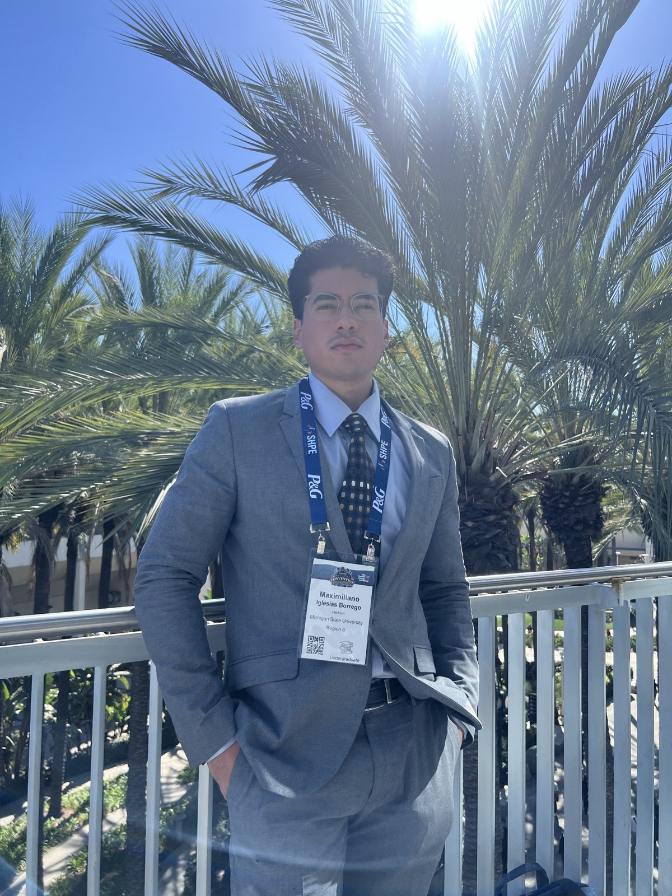

MECHANICAL ENGINEER · DESIGN & HARDWARE
From concept
to working hardware.
I'm Max — a mechanical engineering student at Michigan State University with hands-on experience in design, prototyping, manufacturing, and engineering validation across aerospace, automotive, and energy.

01 / INTERNSHIP EXPERIENCE
Built in industry.
Hands-on experience across aerospace, refining, and automotive manufacturing — with a focus on mechanical design, hardware execution, and engineering problem solving.

GE Aerospace
Supported avionics mechanical development through CAD updates, thermal analysis support, engineering drawings, and configuration-controlled documentation.
VIEW EXPERIENCE
Marathon Petroleum
Worked on refinery mechanical projects including relief systems, fire protection upgrades, piping modifications, and implementation planning.
VIEW EXPERIENCE
Ford Motor Company
Contributed to powertrain manufacturing initiatives through CAD support, process mapping, and engineering work tied to transmission production.
VIEW EXPERIENCEProfessional experience summaries are written at a public-safe level and avoid confidential employer drawings, dimensions, and proprietary technical details.
02 / TECHNICAL PROJECTS
Analysis that holds up.
Coursework and team projects that show how I approach design, simulation, and experimental validation.

Cargo Tricycle Rear Axle
Design loads, fatigue and static analysis, shaft sizing, and FEA.
Explore case study ↗
Stress Concentration FEA
Mesh refinement and theoretical validation on a tension-loaded plate.
Explore case study ↗
Air Diffuser Performance
Pressure recovery and flow separation across 0°–30° diffuser angles.
Explore case study ↗03 / BUILD + TEST
Ideas are great.
Prototypes are better.
One part of engineering I enjoy most is getting something off the screen and into the real world. This 3D-printed fixture is a glimpse of that process.
 01 / PRINTING
01 / PRINTING 02 / PHYSICAL PART
02 / PHYSICAL PARTPCB Assembly Test Fixture
From design and 3D printing to checking the physical part with boards and transferring the fixture for follow-up testing.
VIEW THE BUILD STORY →Public-facing photos from professional work should be used only with the employer's approval. Avoid showing identifying drawings or internal documentation.
04 / THE PERSON BEHIND THE WORK
Curious by nature.
Hands-on by design.
I'm a Mechanical Engineering student at Michigan State University, graduating in May 2027. My interests sit at the intersection of mechanical design, prototyping, and real-world hardware development.
Beyond technical work, I've served two consecutive terms as President of SHPE at MSU, building experience in leadership, collaboration, and creating opportunities for other engineers.